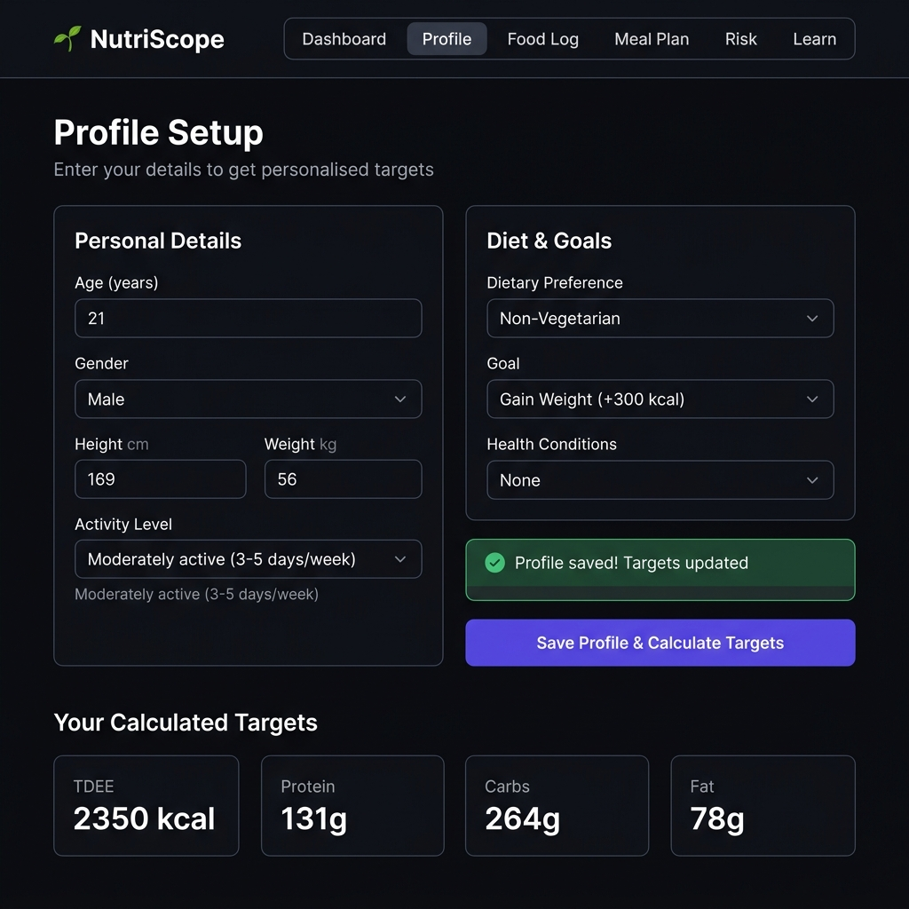

🚀 MVP Version
NutriScope — MVP
A complete single-file HTML nutrition tracker with profile setup, food logging, macro charts, micronutrient tracking, meal planner, and risk analysis.

🖼️
screenshot_mvp.png not found
📊 Dashboard
👤 Profile Setup
🍽️ Food Log
📈 Macro Charts
🧪 Micronutrients
📅 Meal Planner
⚠️ Risk Analysis
📂 CSV Upload
📚 Learn Section
Open MVP App →